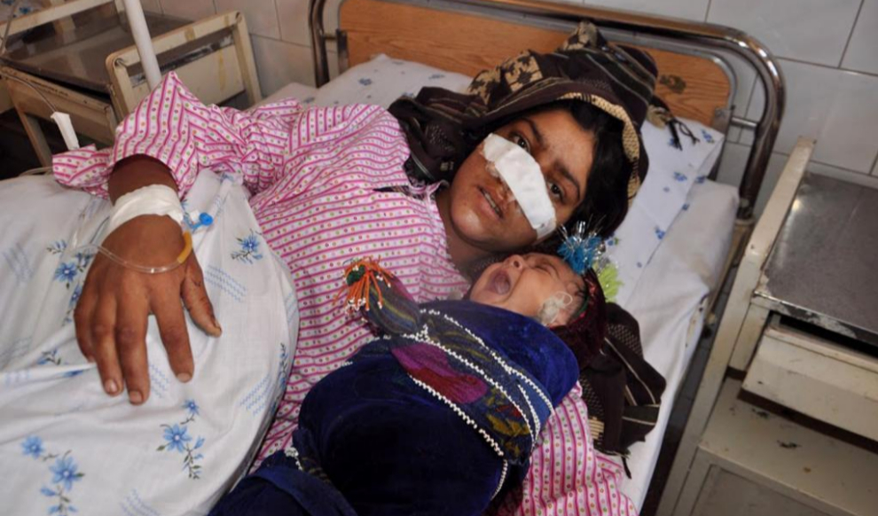

Este tipo de actos bárbaros no sucederían si el sistema judicial afgano castigara severamente los ataques contra las mujeres", así es como Alema, activista por los derechos de las mujeres en Afganistán, condenó ayer el último caso de violencia de género que ha conmocionado a la sociedad afgana. Los hechos sucedieron el pasado domingo en la aldea de Char Char, en el distrito de Ghormach de la provincia de Faryab, al noroeste del país y una de las zonas más disputadas entre el Gobierno y los talibán, cuando la mujer desfigurada, Reza Gul, de 20 años, y su marido, Mohammad Khan, de 25, con el que se casó de manera forzosa cuando tenía 15 años, empezaron un discusión que acabó con el cónyuge "pegándome para luego atarme las manos y cortarme la nariz con su cuchillo de bolsillo", explicó Reza Gul a AFP.Como muchos residentes del distrito de Ghormach, Khan es un hombre desempleado que acababa de volver de Irán donde no encontró trabajo. "Había vuelto hace tres meses", explicó Ahmad Javed Bedar, portavoz del gobernador de Faryab, "y después del ataque contra su mujer es muy posible que se haya unido a los talibán", añadió.Khan, que tiene una segunda esposa de siete años de edad, según informó la CBS, "me torturaba con regularidad", explicó Reza Gul postrada en la cama del hospital donde ha sido ingresada en Maymana, la capital provincial, junto a su hijo de a penas un año llorando desconsoladamente. Tanto el hospital provincial donde se encuentra como los centros hospitalarios de Kabul no cuentan con los medios para realizar una reconstrucción facial. Diversos trabajadores del hospital en Maymana intentaron ayer "organizar un transporte para llevar a Reza a Turquía donde puede recibir un mejor tratamiento", según explicó Fawzia Salimi, directora de dicho centro hospitalario. Hasta el momento no se tienen noticias de que el traslado se haya realizado.Reza Gul no dispone del capital necesario para viajar fuera del país y someterse a una cirugía de reconstrucción, por lo que tendrá que esperar a que alguna organización internacional tenga a bien encargarse de su caso, como ya sucedió en 2010 con el caso de Bibi Aish, de 18 años, a la que el marido también le cortó la nariz y que luego fue operada en los Estados Unidos.La fotografía de la mutilación de Reza Gul fue hecha pública por la Comisión Independiente por los Derechos Humanos e inmediatamente circuló por las redes sociales afganas causando un clamor de repulsión y cientos de demandas para que el Gobierno afgano tome cartas en el asunto.Como Alema, otros grupos de activistas sociales han condenado este "acto bárbaro" y han pedido que se encuentre y castigue al culpable. "En Afganistán este tipo de horror sucede demasiado a menudo", comentó Heather Barr de Human Rights Watch, "el nivel de impunidad para los casos de violencia de género fomenta la idea entre los hombres de que la mujer es de su propiedad y la violencia es su derecho", añadió."¿Somos la nación más orgullosa y valiente de la tierra? Si lo dudabais, ¡aquí tenéis un nuevo ejemplo!", ironizó ayer Maria Reha, una prominente activista social en el país, en su cuenta de Facebook. "No os preocupéis, pronto los Estados Unidos o Europa le darán otra nariz y Afganistán tendrá otro trofeo por su orgullo", concluía denunciando este nuevo caso de violencia machista.Hafizullah Fetrat, Jefe de la Comisión Provincial por los Derechos Humanos en Faryab, explicó que "la violencia de género en la provincia ha aumentado un 30% en el último año". Una estadística que, por otro lado, va ligada al progresivo control que los talibán están ejerciendo sobre la zona.
